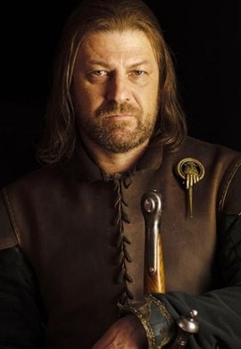
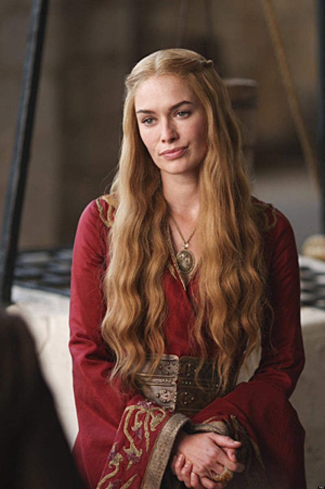
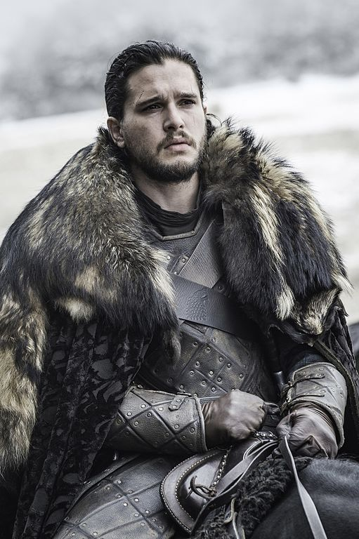

Головні герої циклу «Пісня льоду і полум'я»
У складному та безжальному світі Вестероса, створеному Джорджем Мартіном, кожен персонаж відіграє унікальну роль у великій грі за владу, виживання та справедливість.
Едард «Нед» Старк

Рід: Старки з Вінтерфеллу
Роль: Лорд Вінтерфеллу та Хранитель Півночі
Взірець честі й вірності, який намагається зберігати моральні принципи навіть у світі інтриг.
Нед народився у Вінтерфеллі, стародавньому замку, який вважається серцем Півночі.
Серсея Ланістер

Рід: Ланністери з Кастерлі-Року
Роль: Королева Семи Королівств
Яскрава, амбітна та небезпечна жінка, чия краса рівна лише її хитрості.
Її роль як королеви дружини Роберта Баратеона принесла їй статус, але не щастя.
Джон Сноу

Рід: Сноу
Роль: Лідер Нічної Варті
Джон Сноу є символом честі, мужності та відданості обов’язку.
Джон вирішує присвятити своє життя службі в Нічній Варті.